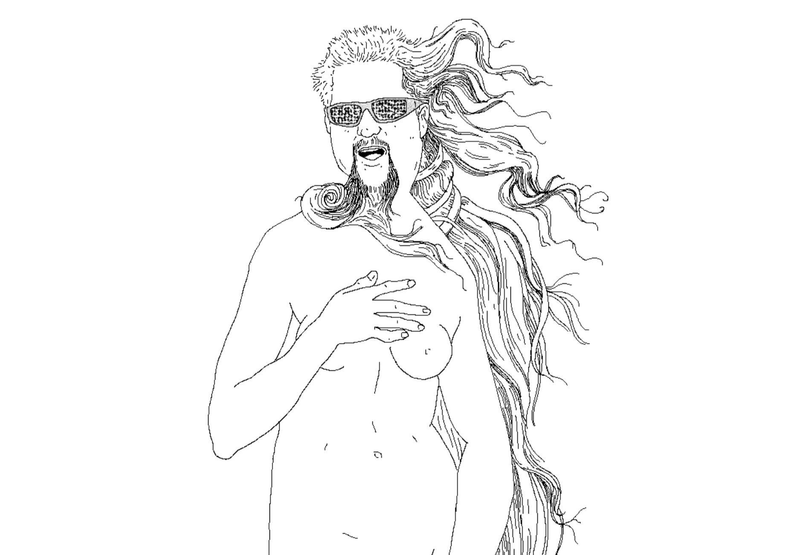

I'm an animator and video producer in NYC. I once wore a mustache on camera.
Please send cool pics and compliments to marcielacerte@gmail.com.
PRESS: It's Nice That, Cartoon Brew, Girls in Film, So The Theory Goes
instagram / vimeo / twitter / giphy / Working Not Working / notebook

An Afternoon Rippling
A text-heavy 2D adventure game about getting lost in a valley after your car breaks down. In your search for the elusive Mechanic, you have conversations with several strange individuals. Coming this summer!

drawings
Also on instagram.

Neo Noboru
An infinite runner game created for the 2017 Global Game Jam. (2017)